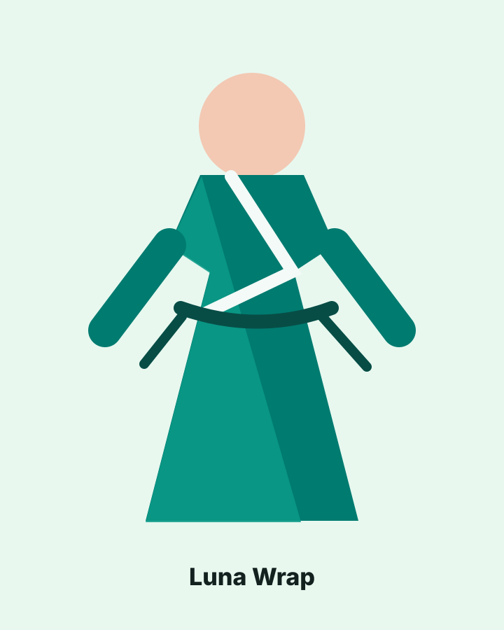
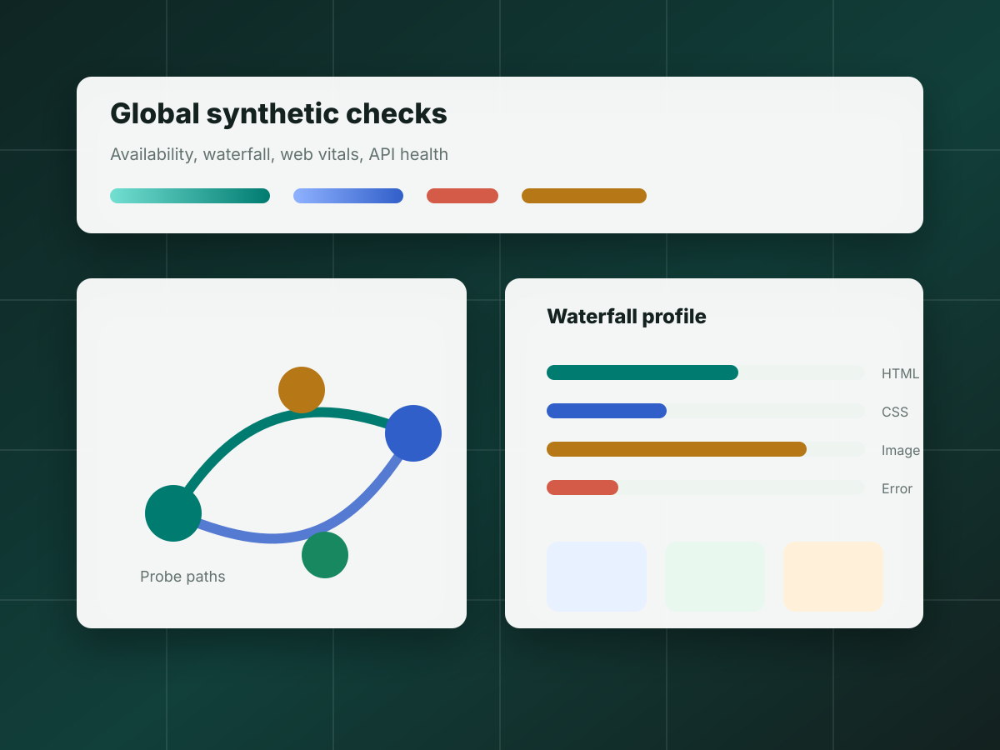

Working image
Luna Wrap Dress
Expected status: image loads successfully.
Images and links
This page is meant for image-load checks, broken asset detection, and link validation. The Network page already has a hidden missing image request; this page makes the broken cases visible.

Expected status: image loads successfully.
Expected status: image loads successfully.

Expected status: image loads successfully.

Expected status: this image should return 404.
This link intentionally points to a page that does not exist, so link checkers and browser tests can detect it.